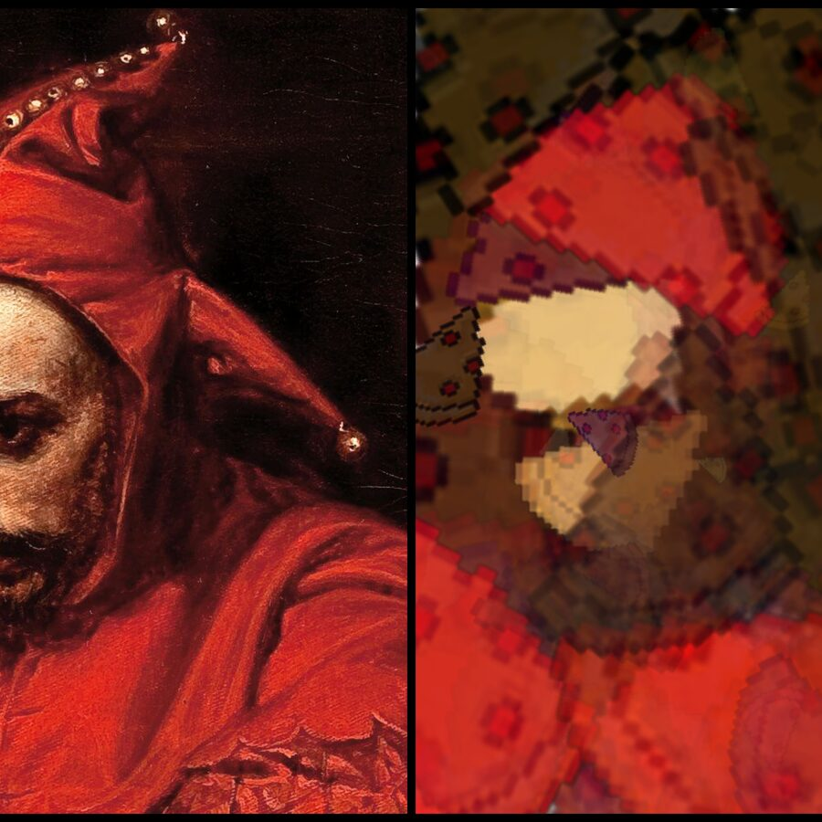

Now
I'm a Computer Science & Statistics student at the University of Toronto, contributing to open source and tinkering with cybersecurity and programming.
Day to day, that's a mix of coursework and freelance IT consulting. I've previously helped organize GenAI Genesis, a nationwide student AI hackathon, and Google Developer Group events, served as Executive Vice-President at AMACSS, and worked as a machine learning developer at UTMIST on a signal-processing project for an external company. Away from the keyboard, I train for mountain ultramarathons and lift weights.
Quick facts
$ whoami
Borys Łangowicz — Machine Learning / Software Developer
$ cat location.txt
Toronto, ON, Canada
$ ls wins/
best-ai-hack-htv8.txt best-ai-hack-htv9.txt best-matlab-hack-ht6.txt
insurhack2025.txt
$ echo $STACK
Python · JavaScript · PyTorch · React · Docker · SQLExperience
-
Information Technology Consultant
Freelance
- Integrated, containerized, and fine-tuned a PHP-based CRM for a critical-infrastructure company, cutting maintenance costs 23% and saving 30 minutes/day of repetitive work.
- Cleaned up and migrated a production database to MariaDB with SQL, shrinking it roughly 50× with no data loss.
- Wrote Bash and Python scripts to automate backups and administration, cutting backup and recovery costs by 70%.
- Built Arduino-based monitoring for critical industry systems, averaging $1,300 saved per false positive and preventing production-line shutdowns.
-
Machine Learning Developer
UTMIST — for Aercoustics Engineering Ltd.
- Designed and trained PyTorch models to classify sound events on construction sites for automated noise-compliance monitoring, cutting false-positive detections 30% and lifting detection accuracy from 85% to 92%.
- Evaluated models on precision, recall, and F1, and diagnosed class-imbalance and data-quality issues, improving detection consistency 15% on underrepresented sound events.
Leadership & activities
-
Vice-President Academics/Advisor
Google Developer Group — University of Toronto Scarborough
- Coordinated with Canadian universities and industry partners to run nationwide DevFest events, hosting prompt-engineering workshops for 600+ students at U of T.
- Ran five-week ML Study Jams teaching TensorFlow, Pandas, and Seaborn; several students went on to win Kaggle competitions, hackathons, and datathons.
- Supported speakers across a two-day Women in Tech Conference at Microsoft HQ — 180+ participants, 25+ workshops, panels, and talks.
-
Operations Executive
GenAI Genesis Hackathon
- Ran judging and prize logistics for Canada's largest AI hackathon: 1,200+ registrations, 250+ hackers from 11 countries, 15 mentors, 30 judges, 66 projects.
-
Executive Vice-President
AMACSS
- Managed an executive team of 13, organizing events and student life and collaborating across departments within the university.
- Helped lead an organization serving 600+ students, addressing student needs and fostering community within the student body and faculty.
Education
University of Toronto
Selected projects
Three builds up top, eight more below.

Recreating images with pizza
An evolutionary algorithm that rebuilds a target image using nothing but overlapping pizza-slice shapes — each generation mutates shape, position, and colour, kept only if it scores closer to the source.
Raytracer, written in C
A ray tracer built from first principles in C — camera rays, intersection tests, and shading, with no graphics libraries to lean on.
Building an operating system
Built out an operating system across four stages — kernel threads, user program execution, virtual memory, and a persistent file system — each stage built directly on top of the last.
| SeaScript | HT6 Best MATLAB Hack ↗ | Python, MongoDB, MATLAB, PyQt, PyGame, NumPy |
| DeezSquats | HTV9 Best AI Hack ↗ | Python, Cloudflare, Computer Vision, PyTorch, Llama, Fine-Tuning |
| Look & Listen | HTV8 Best AI Hack ↗ | Python, Node.js, Express, Flask, React, TensorFlow, OAuth 2.0 |
| miCrograd | Karpathy's micrograd, reimplemented in C ↗ | C, Autograd, Neural Networks |
| Polish Parliament voting analysis ↗ | R, API, Web Scraping, knitr, ggplot2, dplyr |
| Celestial bodies random forest classifier ↗ | Scikit-learn, Pandas, Python |
| Heart disease AdaBoost classifier ↗ | Scikit-learn, Pandas, Python |